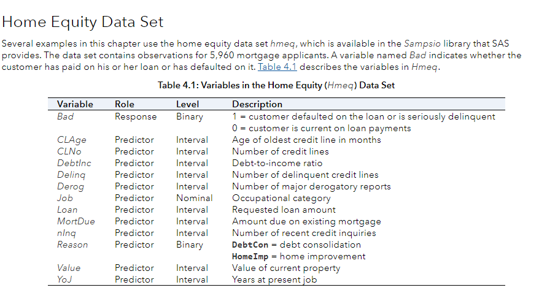

Python 기초
Python 소개
Life is too short. You need Python.
// Java
package me.josh9191;
public class Main {
public static void main(String[] args) {
System.out.println("Hello, World!");
}
}
# Python
print("Hello, World!")
간결하고 생산성이 좋은 언어
Python 소개
수많은 수치해석 / 머신러닝 라이브러리

개발환경 설정
Google Colab
Why?
로컬 PC에 Python, 라이브러리 등을 설치할 필요가 없음
Jupyter Notebook 기반
나쁘지 않은 성능
개발환경 설정
https://colab.research.google.com


개발환경 설정
강의와 관련된 모든 노트북 파일은
아래 링크에서 받아보실 수 있습니다.
이동Python 자료형
정수형
int_var = 30
int_var = 0
int_var = -12
실수형
float_var = 1234.567
float_var = -59.12
float_var = 1e-5
Python 자료형
기타 숫자형
oct_var = 0o13
hex_var = 0x2f
불리언형
a = True
b = False
a and b # False
a or b # True
Python 자료형
수치 및 비교연산
x, y = 2, 4
x + y # 6
x - y # -2
x * y # 8
x / y # 0.5
x // y # 0
x ** y # 16
x % y # 2
x == 2 # True
x != 1 # True
x > y # False
x <= y # True
Python 자료형
같이 코딩해봅시다 - 수치 및 비교연산
코드Python 자료형
문자열
s1 = 'example string'
s2 = "double quotes"
s3 = '''This is
a multi-line string'''
s4 = ("This is an\n"
"implicitly joined\n"
"string")
Python 자료형
문자열 연산
x, y = "abc", "def"
x + y # 'abcdef'
x * 3 # 'abcabcabc'
x[1] # 'b'
x[2:] # 'c'
x[-1] # 'c'
x[1:3] # 'ef'
# 아래는 잘못된 연산입니다.
# x[1] = 'd'
Python 자료형
문자열 관련 함수
x = "this is a string"
x.find("s") # 3
x.find("z") # -1
x.upper() # 'THIS IS A STRING'
x.split() # ['this', 'is', 'a', 'string']
x.replace("this", "that") # 'that is a string'
Python 자료형
같이 코딩해봅시다 - 문자열
코드Python 자료형
리스트
l = []
l = [1, 2, 3]
l = ["a", 1, 6]
l = [[1, 2], [3, 4]]
Python 자료형
리스트 연산
l1, l2 = [1, 2, 3], [4, 5, 6]
l1 + l2 # [1, 2, 3, 4, 5, 6]
l1 * 2 # [1, 2, 3, 1, 2, 3]
l1[0] # 1
l1[-1] # 3
l1[1:3] # [2, 3]
len(l1) # 3
l1[2] = 1 # [1, 2, 1]
del l2[0] # [5, 6]
Python 자료형
리스트 관련 함수
l = [6, 2, 3]
l.append(1) # [6, 2, 3, 1]
l.sort() # [1, 2, 3, 6]
l.reverse() # [6, 3, 2, 1]
l.insert(0, 2) # [2, 6, 3, 2, 1]
l.remove(2) # [6, 3, 2, 1]
l.extend([4, 5]) # [6, 3, 2, 1, 4, 5]
Python 자료형
같이 코딩해봅시다 - 리스트
코드Python 자료형
튜플
t = (1, 2, "a")
t = (3, 4)
튜플 연산
t1, t2 = (1, 2, 3), (4, 5)
t1 + t2 # (1, 2, 3, 4, 5)
t1 * 2 # (1, 2, 3, 1, 2, 3)
len(t1) # 3
# 아래는 잘못된 연산입니다.
# t1[0] = 1
# del t1[1]
Python 자료형
딕셔너리
d = {"a": 1, "b": 2, "c": 3}
d = {"a": [1, 2], "b": "s", 1: 2}
딕셔너리 연산
d = {"x": 1, "y": 2, 3: "c"}
d["x"] # 1
d[3] # 'c'
"x" in d # True
Python 자료형
딕셔너리 관련 함수
d = {1: "a", 2: "b"}
d.keys() # dict_keys([1, 2])
d.values() # dict_values(['a', 'b'])
d.items() # dict_items([(1, 'a'), (2, 'b')])
Python 자료형
같이 코딩해봅시다 - 튜플, 딕셔너리
코드Python 자료형
집합
s = {1, 2, 3}
s = set(["a", "b"])
s = set((3, 4, 5))
집합 연산
s1, s2 = {1, 2, 3}, {2, 3, 4}
s1 & s2 # {2, 3}
s1.intersection(s2) # {2, 3}
s1 | s2 # {1, 2, 3, 4}
s1.union(s2) # {1, 2, 3, 4}
s1 - s2 # {1}
s1.difference(s2) # {1}
Python 자료형
집합 관련 함수
s = set(["a", "b", "c"])
s.add("d") # {'a', 'b', 'c', 'd'}
s.update(["b", "e"]) # {'a', 'b', 'c', 'd', 'e'}
s.remove("c") # {'a', 'b', 'd', 'e'}
Python 자료형
같이 코딩해봅시다 - 집합
코드조건문
if - elif - else
x = 2
if x > 2:
print("Greater than 2.")
elif x == 2:
print("Equals to 2.")
else:
print("Smaller than 2.")
# Equals to 2.
x = "a"
if x == "a" or x == "b":
if x == "a":
print("A")
else:
print("B")
# A
조건문
조건부 표현식
score = 80
if score >= 60:
passed = True
else:
passed = False
# same code as above
passed = True if score >= 60 else False
조건문
퀴즈
주민등록번호를 받아 성별을 출력(1, 3: 남자, 2, 4: 여자)
# [예시 입력]
id = "800101-2345678"
# [예시 출력]
# "남자"
# 답은 다음장 링크에서 나옵니다.
조건문
같이 코딩해봅시다 - 조건문
코드반복문
for
l = [1, 2]
for elem in l:
print(elem)
# 1
# 2
sum = 0
for i in range(0, 5):
sum += i
print(sum) # 10
반복문
for
리스트를 반복할 때 인덱스를 같이 가져올 수 있을까?
l = ["a", "b", "c"]
for idx, elem in enumerate(l):
print(f"Index: {idx}, Value: {elem}")
반복문
for
딕셔너리의 각 원소를 가져올 때는 어떻게 할까?
힌트: 딕셔너리의 keys() 혹은 items() 이용
d = {1: "A", 2: "B", 3: "C"}
for k in d.keys():
print(k, ":", d[k])
for k, v in d.items():
print(k, ":", v)
반복문
List comprehension
리스트를 생성하기 위한 간략한 syntax 제공
l1 = [x for x in range(1, 4)]
# [1, 2, 3]
l2 = [x for x in range(1, 5) if x % 2 == 0]
# [2, 4]
반복문
continue
for i in range(5):
if i % 2 == 0:
continue
print(i)
# 1
# 3
break
for i in range(5):
if i >= 2:
break
print(i)
# 0
# 1
반복문
while
cnt = 0
while cnt < 2:
cnt += 1
print(cnt)
# 1
# 2
cnt = 0
while True:
cnt += 1
print(cnt)
if cnt >= 2:
break
# 1
# 2
반복문
퀴즈
문자열 리스트를 입력으로 받아 5글자 이상인 단어만 출력
# [예시 입력]
input_list = ["apple", "banana", "cat", "dog", "elephant"]
# [예시 출력]
# 'apple'
# 'banana'
# 'elephant'
# 답은 다다음장 링크에서 나옵니다.
반복문
퀴즈 - 2
딕셔너리(키: 문자열, 값: 정수)를 입력으로 받아 값이 홀수인 키만 리스트로 생성
# [예시 입력]
input_dict = {"A": 3, "B": 2, "C": 19, "D": 32, "E": 55}
# [예시 결과]
# answer = ["A", "C", "E"]
# 답은 다음장 링크에서 나옵니다.
반복문
같이 코딩해봅시다 - 반복문
코드함수
함수
def add(a, b):
return a + b
added = add(1, 2)
print(added) # 3
added_2 = add(a=2, b=3)
print(added_2) # 3
def no_args():
return 1
result = no_args()
print(result) # 1
def no_return(a, b):
print(a + b)
no_return(1, 2) # 3
함수
여러 개의 값을 리턴
def swap(x, y):
return y, x
a = 1
b = 2
a, b = swap(a, b)
print((a, b)) # (2, 1)
# 실제로는 튜플 하나가 리턴됩니다.
함수
재귀
자기 자신을 호출하는 함수
# 재귀가 없는 일반 형태
def factorial_norec(n):
answer = 1
for i in range(2, n + 1):
answer *= i
return answer
# 재귀 형태
def factorial_rec(n):
# 종료 조건
if n <= 1:
return 1
return n * factorial_rec(n - 1)
함수
퀴즈
두 숫자형을 입력으로 받아 최대값을 반환하는 함수 작성
# [함수 스켈레톤]
def my_max(a, b):
# ...
# 답은 다다음장 링크에서 나옵니다.
함수
퀴즈 - 2
세 숫자형을 입력으로 받아 최대값을 반환하는 함수 작성
# [함수 스켈레톤]
def my_max2(a, b, c):
# ...
# 답은 다음장 링크에서 나옵니다.
함수
같이 코딩해봅시다 - 함수
코드클래스
클래스 정의
객체는 실세계의 사물을 표현하는데, 속성과 행위를 포함한다.
이러한 객체를 만들기 위한 설계도를 클래스라 함
class Stack:
# ... more codes ...
클래스
생성자 및 멤버 변수 정의
class Stack:
def __init__(self):
self.l = []
클래스
메서드 정의
class Stack:
def __init__(self):
self.l = []
def push(self, new_elem):
self.l.append(new_elem)
def pop(self):
popped = self.l[-1]
del self.l[-1]
return popped
def top(self):
return self.l[-1]
def is_empty(self):
return len(self.l) == 0
클래스
객체 생성 및 메서드 호출
s = Stack()
print(s.is_empty())
s.push(1)
s.push(2)
print(s.top())
s.pop()
s.pop()
print(s.is_empty())
클래스
같이 코딩해봅시다 - 클래스
코드모듈
모듈은 함수, 변수, 클래스를 모아 놓은 파일로, 다른 파이썬 코드에서 불러와 사용할 수 있습니다.
모듈 불러오기
import math
print(math.ceil(3.2)) # 4
print(math.pow(3, 2)) # 9.0
모듈 불러오기 - 2
import math as m
print(m.ceil(3.2)) # 4
print(m.pow(3, 2)) # 9.0
모듈
모듈 내 함수 불러오기
from math import ceil, pow
print(ceil(3.2)) # 4
print(pow(3, 2)) # 9.0
모듈
같이 코딩해봅시다 - 모듈
코드Pandas/NumPy로 데이터 다루기
Pandas 소개
Series
1차원 배열과 동일한 자료구조
import pandas as pd
s = pd.Series([1, 3])
print(s)
# 0 1
# 1 3
# dtype: int64
s = pd.Series([1, 3], index=["a", "b"])
print(s)
# a 1
# b 3
# dtype: int64
Pandas 소개
DataFrame
행과 열로 구성된 자료구조
import pandas as pd
data = {"A": [1, 2], "B": ["a", "b"], "C": [2.3, 1.2]}
df = pd.DataFrame(data)
print(df)
# A B C
# 0 1 a 2.3
# 1 2 b 1.2
print(df["A"])
# 0 1
# 1 2
# Name: A, dtype: int64
Pandas 소개
같이 코딩해봅시다 - Pandas Series / DataFrame
코드유용한 Pandas 함수들
read_csv
CSV 파일을 DataFrame으로 읽어들임
import pandas as pd
url = "https://download.mlcc.google.com/mledu-datasets/california_housing_train.csv"
df = pd.read_csv(url, sep=",")
print(df)
'''
longitude latitude ... median_income median_house_value
0 -114.31 34.19 ... 1.4936 66900.0
1 -114.47 34.40 ... 1.8200 80100.0
... ... ... ... ... ...
16998 -124.30 41.80 ... 1.9797 85800.0
16999 -124.35 40.54 ... 3.0147 94600.0
[17000 rows x 9 columns]
'''
유용한 Pandas 함수들
to_csv
DataFrame을 CSV 파일로 추출
df.to_csv("./my-housing-data.csv", sep="|", index=False)
head
DataFrame의 앞 n행만 반환
print(df.head(n=2))
'''
longitude latitude ... median_income median_house_value
0 -114.31 34.19 ... 1.4936 66900.0
1 -114.47 34.40 ... 1.8200 80100.0
[2 rows x 9 columns]
'''
유용한 Pandas 함수들
iloc
정수 position을 이용해 인덱싱
print(df.iloc[:2])
'''
longitude latitude ... median_income median_house_value
0 -114.31 34.19 ... 1.4936 66900.0
1 -114.47 34.40 ... 1.8200 80100.0
'''
print(df.iloc[[1, 2], [0, 1]])
'''
longitude latitude
1 -114.47 34.40
2 -114.56 33.69
'''
유용한 Pandas 함수들
loc
label을 이용해 인덱싱
print(df.loc[0, "median_house_value"])
# 66900.0
print(df.loc[:2, ["street", "city", "zip"]])
'''
longitude latitude median_income
0 -114.31 34.19 1.4936
1 -114.47 34.40 1.8200
2 -114.56 33.69 1.6509
'''
유용한 Pandas 함수들
boolean 인덱싱
특정 조건에 따라 행을 선택
mask = df["housing_median_age"] < 17
print(mask)
'''
0 True
1 False
...
16998 False
16999 False
Name: housing_median_age, Length: 17000, dtype: bool
'''
유용한 Pandas 함수들
boolean 인덱싱
mask = df["housing_median_age"] < 17
print(df.loc[mask, :])
'''
longitude latitude ... median_income median_house_value
0 -114.31 34.19 ... 1.4936 66900.0
3 -114.57 33.64 ... 3.1917 73400.0
... ... ... ... ... ...
16983 -124.19 41.78 ... 1.6654 74600.0
16991 -124.23 41.75 ... 2.4805 73200.0
[3360 rows x 9 columns]
'''
유용한 Pandas 함수들
boolean 인덱싱
여러 개의 조건 설정
and_mask = (df["housing_median_age"] < 17) \
& (df["median_house_value"] < 70000)
print(df.loc[and_mask, :])
'''
longitude latitude ... median_income median_house_value
0 -114.31 34.19 ... 1.4936 66900.0
14 -114.63 32.76 ... 0.8585 45000.0
... ... ... ... ... ...
16834 -123.32 40.43 ... 0.4999 56700.0
16957 -124.16 41.74 ... 2.1829 69500.0
[128 rows x 9 columns]
'''
유용한 Pandas 함수들
boolean 인덱싱
여러 개의 조건 설정
or_mask = (df["total_rooms"] > 6000) | (df["total_bedrooms"] > 1500)
print(df.loc[or_mask, :])
'''
longitude latitude ... median_income median_house_value
1 -114.47 34.40 ... 1.8200 80100.0
133 -116.06 34.15 ... 2.2466 66800.0
... ... ... ... ... ...
16679 -122.79 38.48 ... 3.1662 191000.0
16692 -122.82 38.55 ... 3.8616 195100.0
[1016 rows x 9 columns]
'''
Pandas 소개
같이 코딩해봅시다 - Pandas 함수 1
코드유용한 Pandas 함수들
drop
특정 행이나 열을 삭제하여 반환
print(len(df), len(df.columns)) # (17000, 9)
df_rows_dropped = df.drop(df.index[0:10000])
print(len(df_rows_dropped)) # 7000
df_cols_dropped = df.drop(["population", "households"], axis=1)
print(len(df_cols_dropped.columns)) # 7
유용한 Pandas 함수들
sort_values
특정 열을 기준으로 정렬하여 반환
df_sorted = df.sort_values(by="population")
print(df_sorted)
'''
longitude latitude ... median_income median_house_value
8232 -118.44 34.04 ... 0.5360 350000.0
2990 -117.79 35.21 ... 2.3750 137500.0
... ... ... ... ... ...
12772 -121.79 36.64 ... 2.3087 118800.0
2274 -117.42 33.35 ... 2.5729 134400.0
[17000 rows x 9 columns]
'''
유용한 Pandas 함수들
통계 함수들
print(df["households"].sum()) # 8520773.0
print(df["households"].max()) # 6082.0
print(df["households"].min()) # 1.0
print(df["households"].mean()) # 501.2219411764706
print(df["households"].median()) # 409.0
유용한 Pandas 함수들
describe
print(df["households"].describe())
'''
longitude latitude ... median_income median_house_value
count 17000.000000 17000.000000 ... 17000.000000 17000.000000
mean -119.562108 35.625225 ... 3.883578 207300.912353
std 2.005166 2.137340 ... 1.908157 115983.764387
min -124.350000 32.540000 ... 0.499900 14999.000000
25% -121.790000 33.930000 ... 2.566375 119400.000000
50% -118.490000 34.250000 ... 3.544600 180400.000000
75% -118.000000 37.720000 ... 4.767000 265000.000000
max -114.310000 41.950000 ... 15.000100 500001.000000
[8 rows x 9 columns]
'''
유용한 Pandas 함수들
퀴즈
california 데이터셋에서 median_income이
2.0 이상인 지역의 평균 median_house_value을 출력
# 답은 다음장 링크에서 나옵니다.
Pandas 소개
같이 코딩해봅시다 - Pandas 함수 2
코드유용한 Pandas 함수들
사칙연산
df["non_bedrooms"] = df["total_rooms"] - df["total_bedrooms"]
df["rooms_per_households"] = df["total_rooms"] / df["households"]
print(df.loc[:, ["non_bedrooms", "rooms_per_households"]])
유용한 Pandas 함수들
isna
df_with_na = pd.DataFrame({"A": [None, 1], "B": [2, None]})
print(df_with_na.isna())
'''
A B
0 True False
1 False True
'''
fillna
print(df_with_na.fillna(0))
'''
A B
0 0.0 2.0
1 1.0 0.0
'''
유용한 Pandas 함수들
isin
print(df["housing_median_age"].isin([3.0, 4.0]).sum()) # 207
Pandas 소개
같이 코딩해봅시다 - Pandas 함수 3
코드NumPy 소개
ndarray
다차원 배열 클래스
import numpy as np
arr = np.array([2, 3, 1, 5, 4])
print(arr) # array([2, 3, 1, 5, 4])
print(type(arr)) # <class 'numpy.ndarray'>
multi_dim_arr = np.array([[1, 2, 3], [4, 5, 6]])
print(multi_dim_arr)
'''
[[1 2 3]
[4 5 6]]
'''
print(multi_dim_arr.ndim) # 2
print(multi_dim_arr.shape) # (2, 3)
NumPy 소개
ndarray
Pandas Series로부터 ndarray 가져오기
import pandas as pd
s = pd.Series([2, 3, 1, 5, 4])
print(s.values) # [2 3 1 5 4]
print(type(s.values)) # <class 'numpy.ndarray'>
NumPy 소개
indexing
arr = np.array([[2, 3, 4], [5, 6, 7]])
print(arr[0, 0]) # 2
print(arr[1, 2]) # 7
print(arr[-1, 2]) # 7
arr_2 = np.array([3, 1, 2, 5, 7, 9, 10])
print(arr_2[arr_2 > 5]) # [7 9 10]
NumPy 소개
slicing
arr = np.array([[2, 3, 4], [5, 6, 7]])
print(arr[0, :]) # [2, 3, 4]
print(arr[0, 1:]) # [3, 4]
print(arr[:1, 1]) # [3]
NumPy 소개
같이 코딩해봅시다 - NumPy 소개
코드유용한 NumPy 함수들
arange
arr = np.arange(1, 6)
print(arr) # [1, 2, 3, 4, 5]
zeros
arr = np.zeros((2, 2))
print(arr)
'''
[[0. 0.]
[0. 0.]]
'''
유용한 NumPy 함수들
full
arr = np.full((2, 2), 1)
print(arr)
'''
[[1 1]
[1 1]]
'''
eye
arr = np.eye(2)
print(arr)
'''
[[1. 0.]
[0. 1.]]
'''
유용한 NumPy 함수들
binary operations
arr_1 = np.array([[2, 3], [1, 4]])
arr_2 = np.array([[-1, 2], [4, 3]])
print(np.add(arr_1, arr_2))
# [[1 5]
# [5 7]]
print(np.subtract(arr_1, arr_2))
# [[ 3 1]
# [-3 1]]
print(np.matmul(arr_1, arr_2))
# array([[10, 13],
# [15, 14]])
유용한 NumPy 함수들
통계 함수들
arr = np.array([[2, 3, 7], [1, 4, 5]])
print(arr.max()) # 7
print(arr.max(axis=0)) # [2 4 7]
print(arr.max(axis=1)) # [7 5]
print(arr.argmax(axis=1)) # [2 2]
print(arr.min(axis=0)) # [1 3 5]
print(arr.argmin(axis=0)) # [1 0 1]
print(arr.sum()) # 22
print(arr.sum(axis=0)) # [ 3 7 12]
print(arr.mean(axis=1)) # [4. 3.33333333]
유용한 NumPy 함수들
Shaping operations
arr = np.array([[2, 3, 1], [1, 2, -1]])
print(arr.shape) # (2, 3)
arr_reshaped = arr.reshape((3, 2))
print(arr_reshaped)
# [[ 2 3]
# [ 1 1]
# [ 2 -1]]
arr_flattened = arr.flatten()
print(arr_flattened) # [ 2 3 1 1 2 -1]
arr_transposed = arr.transpose()
# array([[ 2, 1],
# [ 3, 2],
# [ 1, -1]])
유용한 NumPy 함수들
Numerical operations
arr = np.array([2.2, 3.0, 1.3, 4.2])
print(np.exp(arr)) # [ 9.0250135 20.08553692 3.66929667 66.68633104]
print(np.log(arr)) # [ 0.78845736 1.09861229 0.26236426 1.43508453]
print(np.log2(arr)) # [ 1.13750352 1.5849625 0.37851162 2.07038933]
print(np.sqrt(arr)) # [1.4832397 1.73205081 1.14017543 2.04939015]
print(np.power(arr, 3)) # [10.648 27. 2.197 74.088]
print(np.ceil(arr)) # [3. 3. 2. 5.]
print(np.floor(arr)) # [2. 3. 1. 4.]
유용한 NumPy 함수들
같이 코딩해봅시다 - Numpy 함수
코드데이터 전처리
HMEQ(Home Equity) 데이터셋
직업, 총대출액, 대출사유 등에 따른 대출 상환여부(Bad)
데이터 전처리
HMEQ(Home Equity) 데이터셋
데이터 종류
- 수치형 - 수치로 표현되는 데이터
- 연속형 - 연속적인 값을 갖는 데이터(키, 몸무게)
- 이산형 - 이산적인 값을 갖는 데이터(개수, 명수)
- 범주형 - 범주로 나눌 수 있는 데이터
- 명목형 - 순서없이 분류되는 데이터(성별, 혈액형)
- 순서형 - 순서있이 분류되는 데이터(선호도)
데이터 전처리
HMEQ(Home Equity) 데이터셋
HMEQ 데이터셋 항목
- 연속형 - CLAge, CLNo, DebtInc, Delinq, Derog, Loan, MortDue, nInq, Value, YoJ
- 이산형 - Bad(종속변수 혹은 Target)
- 명목형 - Job, Reason
데이터 전처리시, 범주형과 이산형은 동일하게 처리함!
데이터 전처리
결측치 처리 - 확인
import pandas as pd
import numpy as np
url = "http://support.sas.com/documentation/onlinedoc/viya/exampledatasets/hmeq.csv"
# read data set
df = pd.read_csv(url)
print(df.isna().sum())
'''
BAD 0
...
CLNO 222
DEBTINC 1267
dtype: int64
'''
데이터 전처리
결측치 처리 방법 1 - 제거
# ...continued
print(len(df)) # 5960
df_dropped = df.dropna()
print(len(df_dropped)) # 3364
데이터 전처리
결측치 처리 방법 2 - 치환
# ...continued
categorical_columns = ['REASON', 'JOB']
numeric_columns = [col for col in df.columns \
if col not in categorical_columns and col != 'BAD']
for col in categorical_columns:
# replace with mode value
df[col].fillna(df[col].value_counts().idxmax(), inplace=True)
for col in numeric_columns:
# replace with median value
df[col].fillna(df[col].median(), inplace=True)
데이터 전처리
표준화
print(df.head(n=2))
'''
BAD LOAN MORTDUE ... CLNO DEBTINC
0 1 1100 ... 9.0 34.818262
1 1 1300 ... 14.0 34.818262
'''
for col in numeric_columns:
df[col] = (df[col] - df[col].mean()) / df[col].std()
print(df.head(n=2))
'''
BAD LOAN MORTDUE ... CLNO DEBTINC
0 1 -1.562168 ... -1.230775 0.106954
1 1 -1.544323 ... -0.728328 0.106954
'''
데이터 전처리
범주형(+ 이산형) 변수 처리
encoded_categorical_df = pd.get_dummies(df[categorical_columns])
# replace with newly encoded columns
df_wo_categorical = df.drop(categorical_columns, axis=1)
df = pd.concat([df_wo_categorical, encoded_categorical_df], axis=1)
print(df.head(n=2))
'''
BAD ... JOB_Mgr JOB_Office JOB_Other JOB_ProfExe JOB_Sales JOB_Self
0 1 ... 0 0 1 0 0 0
1 1 ... 0 0 1 0 0 0
'''
데이터 전처리
같이 코딩해봅시다 - 데이터 전처리
코드Scikit-Learn으로
모형 만들기
ML 모형 개발 파이프라인
- 데이터 전처리
- 개발 - 검증 - 테스트 데이터 분리
- 개발 데이터로 모형 적합
- 검증 데이터로 적합된 모형 평가(만약 평가 기준 미충족시 재적합)
- 검증 데이터를 통한 평가 완료 후, 테스트 데이터를 통한 모형 평가(평가 기준 미충족시 재적합)
- 모형 개발 완료
Scikit-Learn 모형 개발
개발 - 검증 - 테스트 데이터 분리(continued)
from sklearn.model_selection import train_test_split
df_x = df.drop(['BAD'], axis=1)
df_y = df['BAD']
# rule-of-thumb -> training : validation : test = 0.6 : 0.2 : 0.2
# 개발 데이터셋 생성
X_train, X_val, y_train, y_val = train_test_split(df_x.values,
df_y.values, test_size=0.4)
# 검증, 테스트 데이터셋 생성
X_val, X_test, y_val, y_test = train_test_split(X_val, y_val,
test_size=0.5)
print(len(X_train), len(X_val), len(X_test)) # 3576 1192 1192
Scikit-Learn 모형 개발
개발 데이터로 모형 적합
from sklearn.linear_model import LogisticRegression
# Logistic regression model
log_clf = LogisticRegression(penalty='l1', solver='liblinear',
random_state=42)
log_clf.fit(X_train, y_train)
Scikit-Learn 모형 개발
검증 데이터로 적합된 모형 평가
from sklearn.metrics import log_loss, accuracy_score
val_predictions = log_clf.predict(X_val)
val_probs = log_clf.predict_proba(X_val)
val_acc = accuracy_score(y_val, val_predictions)
val_loss = log_loss(y_val, val_probs)
print(f"Val. Accuracy: {val_acc:.2%}, Val. Loss: {val_loss}")
# Val. Accuracy: 82.38%, Val. Loss: 0.4119370650603029
Scikit-Learn 모형 개발
테스트 데이터로 적합된 모형 평가
test_predictions = log_clf.predict(X_test)
test_probs = log_clf.predict_proba(X_test)
test_acc = accuracy_score(y_test, test_predictions)
test_loss = log_loss(y_test, test_probs)
print(f"Test Accuracy: {test_acc:.2%}, Test Loss: {test_loss}")
# Test Accuracy: 83.05%, Test Loss: 0.4064703808863552
Scikit-Learn 모형 개발
같이 코딩해봅시다 - Scikit-Learn 모형 개발
코드